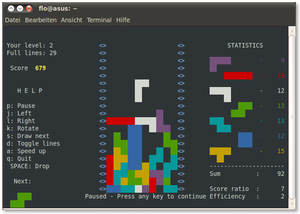

TINT
Dieser Artikel wurde für die folgenden Ubuntu-Versionen getestet:
Dieser Artikel ist größtenteils für alle Ubuntu-Versionen gültig.
Zum Verständnis dieses Artikels sind folgende Seiten hilfreich:
 TINT ist ein kommandozeilenbasierter Tetris-Klon und steht für Tint Is Not Tetris. Es wurde in einer ersten Version (0.02a) im Dezember 2001 aufgelegt und seither weiter entwickelt. Der Entwickler gab an „er habe versucht, so nah wie möglich an der Vorlage zu bleiben“, auch wenn es ein paar Unterschiede gibt. Weiter schreibt er: „Dennoch ist dies vermutlich in der UNIX-Welt diejenige Variante, die dem Original am nächsten kommt“.
TINT ist ein kommandozeilenbasierter Tetris-Klon und steht für Tint Is Not Tetris. Es wurde in einer ersten Version (0.02a) im Dezember 2001 aufgelegt und seither weiter entwickelt. Der Entwickler gab an „er habe versucht, so nah wie möglich an der Vorlage zu bleiben“, auch wenn es ein paar Unterschiede gibt. Weiter schreibt er: „Dennoch ist dies vermutlich in der UNIX-Welt diejenige Variante, die dem Original am nächsten kommt“.
Das Programm gilt dabei als eines der vom Umfang her kleinsten Spiele, die es überhaupt für Linux gibt: Das gesamte Paket ist nur 14,3 Kilobyte groß (oder klein) und beinhaltet sieben Dateien. Es ist, da es nur im Terminal gespielt und angezeigt wird, ohne XServer lauffähig und kann als kurzweiliger Zeitvertreib genutzt werden, wenn dieser mal wieder ausgefallen ist 
Installation¶
|  |
| TINT im Terminal |
TINT ist in den offiziellen Paketquellen enthalten. Es muss das gleichnamige Paket installiert werden [1]:
tint (universe)
 mit apturl
mit apturl
Paketliste zum Kopieren:
sudo apt-get install tint
sudo aptitude install tint
Verwendung¶
Man startet das Spiel, indem man ein Terminal öffnet [2] und folgendem Befehl eingibt [3]:
tint
In der darauf folgenden Abfrage muss man den gewünschten Level (Geschwindigkeitsgrad) eingeben. Es stehen die Stufen 1 (leicht) bis 9 (schwer) zur Auswahl. Danach startet das Spiel.
Folgende Einstellungen und Kommandos stehen zur Verfügung. Diese werden auch als Links neben dem Spielfeld angezeigt:
| TINT | |
| Taste | Funktion |
| J | links |
| L | rechts |
| K | rotieren |
| fallen | |
| P | Pause |
| S | Anzeige des nächsten Steins |
| D | Hilfslinien |
| A | Geschwindigkeit (Level) erhöhen |
| Q | Spiel beenden |
Es werden rund um das Spielfeld noch weitere Informationen angezeigt. Dazu gehören eine Statistik der verbauten Steine (rechte Seite) sowie die Anzeige des aktuellen Levels und der komplettierten Linien (links oben).
Beendet man das Spiel mit der Taste Q oder verliert ein Level, weil die Steine den oberen Rand erreichen, so erhält man eine Übersicht der Spielerstatistik und hat die Möglichkeit, sich in die Highscoreliste einzutragen.
PLAYER STATISTICS Score 116 Efficiency 2 Score ratio 10 Congratulations! You have a new high score. Enter your name:
 - nicht mehr vorhanden
- nicht mehr vorhanden Programmübersicht
Programmübersicht- Erstellt mit Inyoka
-
 2004 – 2017 ubuntuusers.de • Einige Rechte vorbehalten
2004 – 2017 ubuntuusers.de • Einige Rechte vorbehalten
Lizenz • Kontakt • Datenschutz • Impressum • Serverstatus -
Serverhousing gespendet von